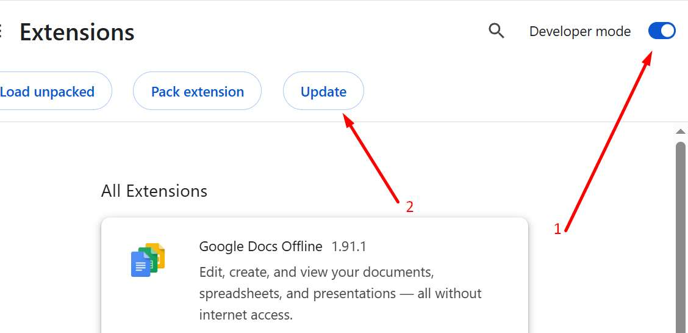

ヒーローウォーズシミュレーターのインストール方法
| インストール手順 |
|---|
|
ステップ1: 拡張機能を開く
設定にアクセスするには、これらの手順に従う必要があります。
Google Chrome リファレンスブラウザ Firefoxは動作しません 
|
|
ステップ2: 開発者モードを有効にする
設定にアクセスするには、これらの手順に従う必要があります。

変更を有効にするには、ブラウザを閉じて再度開く必要がある場合があります。 |
|
ステップ3: ヒーローウォーズシミュレーターをインストールする
Chromeストアにアクセスし
ヒーローウォーズシミュレーターをダウンロードしてください リンクを開くにはここをクリックしてください 
|
|
ステップ4: HWSのみを残す
他のスクリプトがある場合は
ヒーローウォーズシミュレーターを使用する際は 一時的に無効にしてください 
|
|
ステップ5: ヒーローウォーズシミュレーターがインストールされました
ゲームを開くと表示されるはずです
www.hero-wars.com 
|
|
ステップ6: ヒーローウォーズシミュレーターをピン留めする
拡張機能を追加する必要があります
右上の拡張機能メニューを開いてください 
次に
拡張機能アイコンをクリックしてください。 
このメニューが表示されます パート2に続きます... |